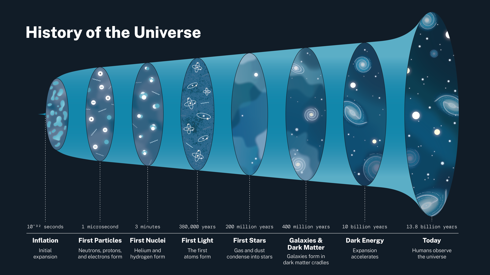

<section class="section">
    <div class="container">
        <div class="content">

            <h1 data-i18n="Welcome to DESI High!">Welcome to DESI High!</h1>
            <p>
                [Introductory text]
            </p>

            <h2 data-i18n="Summary">Summary</h2>
            <p>
                <ul>
                    <li><a href="#origins">Origins of DESI: The Mystery of Dark Energy</a></li>
                    <li><a href="#DESI">Introduction to DESI</a></li>
                    <li><a href="#principal">Meet the principal</a></li>
                    <li><a href="#tutorial">How does this works ?</a></li>
                </ul>
            </p>

            <h3 id="origins">Origins of DESI: The Mystery of Dark Energy</h3>
            <p>
                Our universe is expanding. Astronomical observations tell us that the space between galaxies is getting larger over time, while the galaxies themselves stay the same size. This expansion is well understood and is explained by Albert Einstein's theory of General Relativity. When the universe started with the Big Bang, it was small, hot, and dense, and it has since expanded up until the present day.
            </p>

            
            <p class="notification is-info is-light">
                The above illustration shows a timeline of the universe's expansion and the changes in its physical conditions at various points in its history (<strong>Credit:</strong> NASA).
            </p>

            <p>
                One surprising observation is that the universe's expansion is getting faster. When this accelerating expansion was first discovered in the years 1998 and 1999, we didn't know what was causing it. In fact, we still know very little about the physical cause of the accelerating expansion, which we attribute to a mysterious form of energy called dark energy. Studying and learning more about dark energy is one of the greatest undertakings in modern physics.
            </p>
            <p class="is-size-7">
                🤓☝️ Learn more about dark energy in our <a href="curriculum.html">Dark Energy</a> notebook!
            </p>

            <h3 id="DESI">Introduction to DESI</h3>
            <p>
                One way that we can study dark energy is by making a giant, three-dimensional map of the universe. The universe's expansion history is encoded in the positions of galaxies. By mapping the distances to millions of galaxies far away from our own, we can learn more about how dark energy has affected the universe's expansion over time.
            </p>

            
            <p class="notification is-info is-light">
                The above illustration shows a cross-section of the 3D map created by the DESI collaboration, with each speck of light being one of millions of galaxies that DESI observes <br>(<strong>Credit:</strong> Claire Lamman and the DESI Collaboration).
            </p>
            <p class="is-size-7">
                🤓☝️ Learn more about how we map the universe in our <a href="curriculum.html">Observations</a> and <a href="curriculum.html">Distances</a> notebooks !
            </p>

            <!-- From about.html -->
            <p data-i18n="About DESI 1">
                The <strong>Dark Energy Spectroscopic Instrument (DESI)</strong> is a cosmological survey that aims to map the large-scale structure of the universe and understand the nature of dark energy. It will measure the spectra of millions of galaxies and quasars, that the DESI scientists will analyse to constrain the cosmological models that describe the evolution of the universe.
            </p>
            <p class="is-size-7">
                <a href="https://desi.lbl.gov/" target="_blank" data-i18n="Learn more about DESI">Learn more about DESI</a>
            </p>

            <h3 id="principal">Meet the principal</h3>
            <p>
                The existence of dark energy was irrefutably confirmed by Lawrence Berkeley Lab's very own <a href="https://en.wikipedia.org/wiki/Saul_Perlmutter">Saul Perlmutter</a>, Brian Schmidt and Adam Reiss in 1998, when they discovered that the universe's expansion was accelerating. They were awarded the <a href="https://www.nobelprize.org/prizes/physics/2011/summary/">Nobel Prize in Physics in 2011</a> for their work.
            </p>

            <p>
                As honorary principal at DESI High, Saul has a special opening address to all the students, including you!
            </p>

            <div class="columns is-centered is-vcentered" id="saul-letter">
                <div class="column is-three-quarters-desktop is-full-touch" style="height: 500px;">
                    <object data="assets/pdf/saul_perlmutter_welcome.pdf#view=FitH&toolbar=0&navpanes=0&scrollbar=0" type="application/pdf" width="100%" height="100%">
                        <a href="assets/pdf/saul_perlmutter_welcome.pdf">Read the letter here !</a>
                    </object>
                </div>
            </div>
            <p class="is-size-7">
                🤓☝️ Take a hands-on look at Saul's experiment in our <a href="curriculum.html">Dark Energy</a> notebook!
            </p>
            
            <h3 id="tutorial">How does this works ?</h3>
            <p>
            [List of content to add here] 
            <ul>
                <li>Curriculums</li>
                <li>Pro Tips</li>
                <ul>
                    <li>Google & Stack Overflow</li>
                    <li>Ask questions !</li>
                </ul>
            </ul>
        </p>


        </div>
    </div>
</section>